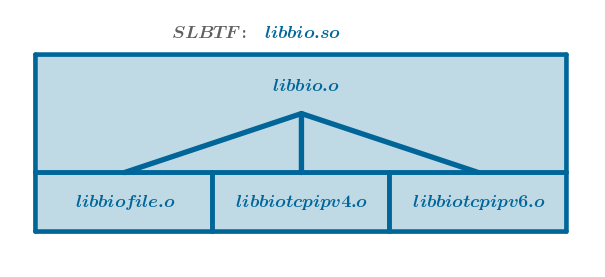
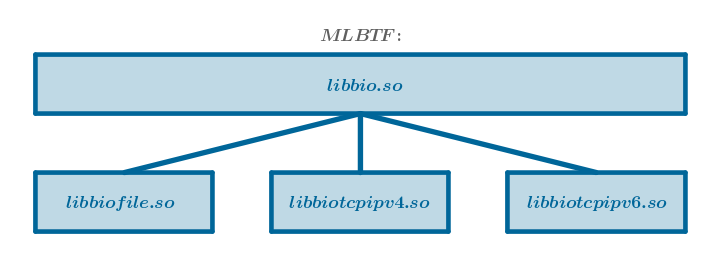
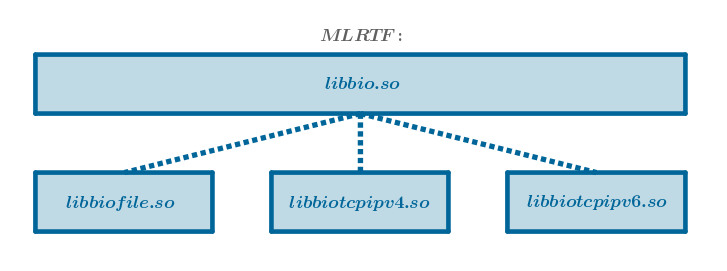

The Factory pattern may be used to create variables of encapsulated custom C data types that may have a multitude of similar but different implementations each of which may be attached to a common interface.
A data type representing the common interface is called common or abstract while the data types representing similar but different implementations of that interface are called concrete.
For example, an abstract data type of a byte I/O Factory, a model used in this chapter, could be:
$$bio\_t$$The similar but different implementations or concrete data types of such a Factory could be:
$$file\_t$$ $$tcpipv4\_t$$ $$tcpipv6\_t$$where file_t represents a concrete implementation of an abstract data type based on disk files, tcpipv4_t represents an implementation based on TCP/IP version four and tcpipv6_t represents an implementation based on TCP/IP version six.
While ADT and Handle encapsulate a single custom C data type, Factory encapsulates an arbitrary number of them by hiding their differences and exposing their commonalities. As such, by containing the creation of variables of the above concrete data types within its boundaries Factory eliminates the explicit dependency of the code external to it on a multitude of concrete types.
The Factory pattern consequences:
Sample Problem
Implement an abstract byte I/O, or just I/O from now on, data type using disk files, TCP/IP v4 and TCP/IP v6 as its concrete incarnations.
Generic Solution Description
1) Establish a common interface that all the known concrete I/O mechanisms will have to implement.
2) Choose a native C data type to be used as a key for selecting a concrete I/O data type.
3) Make Factory's SizeOf(), New() and Construct() functions accept the chosen key as a parameter.
4) Implement Factory as an ADT comprised of (pointers to) functions corresponding to the established interface.
5) Forward each Factory's common interface call to a concrete I/O data type.
6) Implement each concrete I/O data type as a modified ADT - an ADT that only possesses Construct() and Destruct() and lacks New() and Delete() interfaces.
Sample Implementation
Step 1
Make the I/O common interface consist of four functions:
Capture the above interface as an ADT in the public libbio.h header file:
#include <sys/types.h> typedef struct bio { int ( *open )( struct bio*, const char* ); ssize_t ( *read )( struct bio*, void*, size_t ); ssize_t ( *write )( struct bio*, void*, size_t ); int ( *close )( struct bio* ); } bio_t;
Step 2
Reasonably convenient native C data types that can be used as keys to select a desired implementation are char and int. We will use char* or human-readable C strings.
As such, the string "file" will identify a disk file-based data type, the string "tcpipv4" will identify a TCP/IP version four data type and the string "tcpipv6" will identify a TCP/IP version six data type.
We will use the above strings as input to generate the corresponding function and file names according to the following rule:
$$name = suffix + key + prefix$$where either suffix or prefix may be optional depending on the nature of the name.
For example, the name of the generic and public sizeOf function is "bioSizeOf". The name of the corresponding concrete and private function implemented by the disk file mechanism is "bioSizeOffile" - that is the name that we will type into the "libbiofile.c" implementation file.
By analogy, the corresponding pairs of names for the TCP/IP v4 and TCP/IP v6 mechanisms are "bioSizeOftcpipv4" and "libbiotcpipv4.c", and "bioSizeOftcpipv6" and "libbiotcpipv6.c".
These, and other relevant names, will be generated programmatically by the I/O Factory proper at run time to satisfy the callers' requests. Consequently, these names should be adhered to by the author(s) at keyboard time when the corresponding implementations are typed in.
Step 3
Based on the established "human-readable C string to a concrete data type" mapping scheme our I/O Factory will consist of the following files:
These files can be packaged into an executable form in a multitude of ways. Choose one.
We will cover three packaging possibilities that have been tested in practice:
1) Package all the I/O Factory source files into a single shared library, libbio.so, which will be linked in explicitly, at build time:
... -lbio
For brevity sake, let us name this packaging option Single Library Build Time Factory or SLBTF for short:
2) Package the I/O Factory proper, libbio.h and libbio.c, into the libbio.so shared library.
Package the concrete I/O mechanism implementations into separate shared libraries:
All the above libraries will be linked in explicitly, at build time:
... -lbio -lfile -ltcpipv4 -ltcpipv6
For brevity sake, let us name this packaging option Multiple Libraries Build Time Factory or MLBTF for short:
3) Package the I/O Factory files the same way that they are packaged in MLBTF.
Add the code to bioSizeOf() to load the requested concrete I/O mechanism implementation library at run time.
In this case only the libbio.so library will be linked in explicitly, at build time:
... -lbio
The rest of the libraries will be linked in dynamically at run time on the "need-to-load" bases by the I/O Factory proper.
Why bioSizeOf() is a chosen function is explained in Step 7 below.
For brevity sake, let us name this packaging option Multiple Libraries Run Time Factory or MLRTF for short:

Step 4
Commentary
The life of an I/O Factory-based variable begins with a call to bioNew(). Based on our mapping scheme, to create a disk file type variable, for example, we will invoke this function with the corresponding key as follows:
bio_t* bio = bioNew( "file" );
From the encapsulation patterns chapters we remember that bioNew() will call bioConstruct() which must know the name of the construction function corresponding to the disk files implementation in order to invoke it. Since a variable of type file does not exist yet, bioConstruct() will rely on the chosen mapping scheme to synthesize that name programmatically.
The symmetrical operation of destruction, on the other hand, is applied to an already existing variable. Hence, the name of the concrete destruct() function bound to that variable does not have to adhere to any mapping scheme - recall the ADT's inner mechanics.
As such, add the name of the destruction function to the public interface of our I/O Factory in the libbio.h public header file:
#include <sys/types.h> typedef struct bio { int ( *open )( struct bio*, const char* ); ssize_t ( *read )( struct bio*, void*, size_t ); ssize_t ( *write )( struct bio*, void*, size_t ); int ( *close )( struct bio* ); void ( *destruct )( struct bio* ); } bio_t;
Step 5
Add the prototypes of the life cycle functions to libbio.h.
Observe that only bioNew(), bioConstruct() and bioSizeOf() accept the concrete I/O mechanism key as an argument:
#include <sys/types.h> typedef struct bio { int ( *open )( struct bio*, const char* ); ssize_t ( *read )( struct bio*, void*, size_t ); ssize_t ( *write )( struct bio*, void*, size_t ); int ( *close )( struct bio* ); void ( *destruct )( struct bio* ); } bio_t; extern bio_t* bioNew( const char* ); extern void bioDelete( bio_t** ); extern bio_t* bioConstruct( void*, const char* ); extern void bioDestruct( bio_t* ); extern size_t bioSizeOf( const char* );
Step 6
Add the prototypes of the convenience functions to libbio.h:
#include <sys/types.h> typedef struct bio { int ( *open )( struct bio*, const char* ); ssize_t ( *read )( struct bio*, void*, size_t ); ssize_t ( *write )( struct bio*, void*, size_t ); int ( *close )( struct bio* ); void ( *destruct )( struct bio* ); } bio_t; extern bio_t* bioNew( const char* ); extern void bioDelete( bio_t** ); extern bio_t* bioConstruct( void*, const char* ); extern void bioDestruct( bio_t* ); extern size_t bioSizeOf( const char* ); extern int bioOpen( bio_t*, const char* ); extern ssize_t bioRead( bio_t*, void*, size_t ); extern ssize_t bioWrite( bio_t*, void*, size_t ); extern int bioClose( bio_t* );
Step 7
Implement the bioSizeOf() function in the libbio.c file.
If an I/O Factory-type variable is created with a call to bioNew() then bioSizeOf() is the very first function that will be invoked, see Step 9.
If an I/O Factory-type variable is constructed at an arbitrary memory location via bioConstruct() then bioSizeOf() must be invoked prior - to obtain the size of the corresponding variable in bytes.
In either case bioSizeOf() is invoked before any construction work commences. It follows then that bioSizeOf() is the function that will dynamically load the concrete I/O mechanism's implementation library at run time if that particular Factory packaging option, MLRTF, is chosen, via the -DIO_MLRTF option perhaps.
In the latter, MLRTF, case, for the consequent symbol searches to work properly, instruct the library loader to make the just linked in library's symbols globally visible so that any object within the process can find them. On Unix/Linux do this via the RTLD_GLOBAL flag.
Regardless of the Factory's packaging type, bioSizeOf() will search all the objects within the running process - the ones loaded explicitly at program's start up and the ones linked in dynamically at run time - for the requested I/O mechanism's SizeOf() function and then it will invoke it.
bioSizeOf() is the only Factory packaging type-specific function:
#include <stdio.h> #include <stdlib.h> #include <dlfcn.h> /* for dlsym(). Replace with your OS' equivalent header. */ #include "libbio.h" extern size_t bioSizeOf( const char* bionm ) { size_t rv; size_t ( *biosizeof )(); void* handle = RTLD_DEFAULT; char nm[ 1024 + 1 ] = { 0 }; size_t nmsz = sizeof( nm ); #ifdef IO_MLRTF snprintf( nm, nmsz, "libbio%s.so", bionm ); handle = dlopen( nm, RTLD_LAZY | RTLD_GLOBAL ); #endif snprintf( nm, nmsz, "bioSizeOf%s", bionm ); biosizeof = ( size_t ( * )() )dlsym( handle, nm ); rv = biosizeof(); return rv; }
Step 8
Implement the bioConstruct() function in the libbio.c file.
Just like bioSizeOf(), this function will search all the loaded modules for a concrete construction function and then it will invoke it. However, unlike bioSizeOf(), this function does not have to load any libraries because bioSizeOf() has, optionally, done so already:
extern bio_t* bioConstruct( void* mem, const char* bionm ) { bio_t* bio; bio_t* ( *biocnstrct )( void* ); char fnm[ 1024 + 1 ] = { 0 }; size_t fnmsz = sizeof( fnm ); snprintf( fnm, fnmsz, "bioConstruct%s", bionm ); biocnstrct = ( bio_t* ( * )( void* ) )dlsym( RTLD_DEFAULT, fnm ); bio = biocnstrct( mem ); return bio; }
Step 9
Implement the bioNew() function in the libbio.c file.
Now that the key-driven functions bioSizeOf() and bioConstruct() are implemented bioNew() can eliminate any static, compile or keyboard time, dependency on concrete data types:
extern bio_t* bioNew( const char* bionm ) { bio_t* bio; size_t n = bioSizeOf( bionm ); void* mem = calloc( 1, n ); bio = bioConstruct( mem, bionm ); return bio; }
Step 10
Implement the bioDestruct() and bioDelete() functions in the libbio.c file.
These functions operate on the existing, previously constructed, variables and, as such, they are not mapping keys-driven. Further, bioDestruct() forwards the call to its concrete equivalent that was set by the corresponding bioConstruct() function (again, recall the ADT's inner mechanics):
extern void bioDestruct( bio_t* bio ) { bio->destruct( bio ); } extern void bioDelete( bio_t** bio ) { if ( !bio || !*bio ) { return; } bioDestruct( *bio ); free( *bio ); *bio = ( bio_t* )NULL; }
Step 11
In the libbio.c file forward each Factory ADT's common interface call to its concrete equivalent (that will be set by the corresponding bioConstruct() function):
extern int bioOpen( bio_t* bio, const char* adrs ) { int rv; rv = bio->open( bio, adrs ); return rv; } extern ssize_t bioRead( bio_t* bio, void* b, size_t bsz ) { ssize_t rv; rv = bio->read( bio, b, bsz ); return rv; } extern ssize_t bioWrite( bio_t* bio, void* b, size_t bsz ) { ssize_t rv; rv = bio->write( bio, b, bsz ); return rv; } extern int bioClose( bio_t* bio ) { int rv; rv = bio->close( bio ); return rv; }
This step completes the work on libbio.c shown here in its entirety:
#include <stdio.h> #include <stdlib.h> #include <dlfcn.h> /* for dlsym(). Replace with your OS' equivalent header. */ #include "libbio.h" extern size_t bioSizeOf( const char* bionm ) { size_t rv; size_t ( *biosizeof )(); void* handle = RTLD_DEFAULT; char nm[ 1024 + 1 ] = { 0 }; size_t nmsz = sizeof( nm ); #ifdef IO_MLRTF snprintf( nm, nmsz, "libbio%s.so", bionm ); handle = dlopen( nm, RTLD_LAZY | RTLD_GLOBAL ); #endif snprintf( nm, nmsz, "bioSizeOf%s", bionm ); biosizeof = ( size_t ( * )() )dlsym( handle, nm ); rv = biosizeof(); return rv; } extern bio_t* bioConstruct( void* mem, const char* bionm ) { bio_t* bio; bio_t* ( *biocnstrct )( void* ); char fnm[ 1024 + 1 ] = { 0 }; size_t fnmsz = sizeof( fnm ); snprintf( fnm, fnmsz, "bioConstruct%s", bionm ); biocnstrct = ( bio_t* ( * )( void* ) )dlsym( RTLD_DEFAULT, fnm ); bio = biocnstrct( mem ); return bio; } extern bio_t* bioNew( const char* bionm ) { bio_t* bio; size_t n = bioSizeOf( bionm ); void* mem = calloc( 1, n ); bio = bioConstruct( mem, bionm ); return bio; } extern void bioDestruct( bio_t* bio ) { bio->destruct( bio ); } extern void bioDelete( bio_t** bio ) { if ( !bio || !*bio ) { return; } bioDestruct( *bio ); free( *bio ); *bio = ( bio_t* )NULL; } extern int bioOpen( bio_t* bio, const char* adrs ) { int rv; rv = bio->open( bio, adrs ); return rv; } extern ssize_t bioRead( bio_t* bio, void* b, size_t bsz ) { ssize_t rv; rv = bio->read( bio, b, bsz ); return rv; } extern ssize_t bioWrite( bio_t* bio, void* b, size_t bsz ) { ssize_t rv; rv = bio->write( bio, b, bsz ); return rv; } extern int bioClose( bio_t* bio ) { int rv; rv = bio->close( bio ); return rv; }
Step 12
Implement each concrete I/O mechanism as a modified ADT - an ADT that possesses Construct() and Destruct() and lacks New() and Delete() interfaces.
We will only implement the disk file modified ADT in its entirety, in the libbiofile.c file. The implementations of the remaining I/O mechanisms will be rudimentary - we will type in enough code for the corresponding libraries to compile without warnings, see libbiotcpipv4.c below. You are encouraged to complete these implementations on your own.
Observe that the names of only two functions - bioSizeOffile() and bioConstructfile() - must follow the chosen naming convention because these names will be generated programmatically by the I/O Factory proper. Since these names must be searchable across translation units, designate their linkage specification as extern.
While the names of the remaining functions can be arbitrary, their prototypes must adhere to the ones announced in the public libbio.h header file. Since these names are not searchable across translation units, their linkage specification may be designated as static:
libbiofile.c:
#include <stdio.h> #include "libbio.h" typedef struct { bio_t bioadt; FILE* f; } biofile_t; /* The names of these functions must adhere to the chosen naming convention. Their linkage specification is "extern". */ extern size_t bioSizeOffile(); extern bio_t* bioConstructfile( void* ); /* The names of these functions are arbitrary but their prototypes must conform to the ones announced in libbio.h public header file. The linkage specification of these functions may be "static". */ static int bioOpenFile( bio_t*, const char* ); static ssize_t bioReadFile( bio_t*, void*, size_t ); static ssize_t bioWriteFile( bio_t*, void*, size_t ); static int bioCloseFile( bio_t* ); static void bioDestructFile( bio_t* ); static bio_t bioAdtFile = { bioOpenFile, bioReadFile, bioWriteFile, bioCloseFile, bioDestructFile }; extern size_t bioSizeOffile() { size_t rv; rv = sizeof( biofile_t ); return rv; } extern bio_t* bioConstructfile( void* mem ) { bio_t* rv; biofile_t* file = ( biofile_t* )mem; file->bioadt = bioAdtFile; file->f = ( FILE* )NULL; rv = &file->bioadt; return rv; } static void bioDestructFile( bio_t* bio ) { bioCloseFile( bio ); } static int bioOpenFile( bio_t* bio, const char* adrs ) { int rv; biofile_t* file = ( biofile_t* )bio; file->f = fopen( adrs, "a+" ); rv = file->f ? 0 : -1; return rv; } static ssize_t bioReadFile( bio_t* bio, void* b, size_t bsz ) { size_t n; biofile_t* file = ( biofile_t* )bio; n = fread( b, 1, bsz, file->f ); if ( n != bsz && ferror( file->f ) ) { return -1; } return n; } static ssize_t bioWriteFile( bio_t* bio, void* b, size_t bsz ) { size_t n; biofile_t* file = ( biofile_t* )bio; n = fwrite( b, 1, bsz, file->f ); if ( n != bsz && ferror( file->f ) ) { return -1; } return n; } static int bioCloseFile( bio_t* bio ) { biofile_t* file = ( biofile_t* )bio; if ( !file->f ) { return 0; } fclose( file->f ); file->f = ( FILE* )NULL; return 0; }
libbiotcpipv4.c:
#include <stdio.h> #include "libbio.h" typedef struct { bio_t bioadt; int sockd; } biotcpipv4_t; /* The names of these functions must adhere to the chosen naming convention. Their linkage specification is "extern". */ extern size_t bioSizeOftcpipv4(); extern bio_t* bioConstructtcpipv4( void* ); /* The names of these functions are arbitrary but their prototypes must conform to the ones announced in libbio.h public header file. The linkage specification of these functions may be "static". */ static int bioOpenTcpipv4( bio_t*, const char* ); static ssize_t bioReadTcpipv4( bio_t*, void*, size_t ); static ssize_t bioWriteTcpipv4( bio_t*, void*, size_t ); static int bioCloseTcpipv4( bio_t* ); static void bioDestructTcpipv4( bio_t* ); static bio_t bioAdtTcpipv4 = { bioOpenTcpipv4, bioReadTcpipv4, bioWriteTcpipv4, bioCloseTcpipv4, bioDestructTcpipv4 }; extern size_t bioSizeOftcpipv4() { size_t rv; rv = sizeof( biotcpipv4_t ); return rv; } extern bio_t* bioConstructtcpipv4( void* mem ) { bio_t* rv; biotcpipv4_t* tcpipv4 = ( biotcpipv4_t* )mem; tcpipv4->bioadt = bioAdtTcpipv4; printf( "%s.%d: bioConstructtcpipv4()\n", __FILE__, __LINE__ ); rv = &tcpipv4->bioadt; return rv; } static void bioDestructTcpipv4( bio_t* bio ) { bioCloseTcpipv4( bio ); } static int bioOpenTcpipv4( bio_t* bio, const char* adrs ) { int rv; biotcpipv4_t* tcpipv4 = ( biotcpipv4_t* )bio; printf( "%s.%d: bioOpenTcpipv4()\n", __FILE__, __LINE__ ); rv = 1; return rv; } static ssize_t bioReadTcpipv4( bio_t* bio, void* b, size_t bsz ) { size_t n; biotcpipv4_t* tcpipv4 = ( biotcpipv4_t* )bio; printf( "%s.%d: bioReadTcpipv4()\n", __FILE__, __LINE__ ); n = bsz; return n; } static ssize_t bioWriteTcpipv4( bio_t* bio, void* b, size_t bsz ) { size_t n; biotcpipv4_t* tcpipv4 = ( biotcpipv4_t* )bio; printf( "%s.%d: bioWriteTcpipv4()\n", __FILE__, __LINE__ ); n = bsz; return n; } static int bioCloseTcpipv4( bio_t* bio ) { biotcpipv4_t* tcpipv4 = ( biotcpipv4_t* )bio; printf( "%s.%d: bioCloseTcpipv4()\n", __FILE__, __LINE__ ); return 0; }
Type in the libbiotcpipv6.c file by ananlogy with its libbiotcpipv4.c counterpart.
Step 13
Build the I/O Factory.
SLBTF:
gcc -D_GNU_SOURCE -g -c -fPIC -I . libbio.c gcc -g -c -fPIC -I . libbiofile.c gcc -g -c -fPIC -I . libbiotcpipv4.c gcc -g -c -fPIC -I . libbiotcpipv6.c gcc -g -shared -o libbio.so \ libbio.o \ libbiofile.o \ libbiotcpipv4.o \ libbiotcpipv6.o -ldl
MLBTF:
gcc -D_GNU_SOURCE -g -c -fPIC -I . libbio.c gcc -g -shared -o libbio.so libbio.o -ldl gcc -g -c -fPIC -I . libbiofile.c gcc -g -shared -o libbiofile.so libbiofile.o gcc -g -c -fPIC -I . libbiotcpipv4.c gcc -g -shared -o libbiotcpipv4.so libbiotcpipv4.o gcc -g -c -fPIC -I . libbiotcpipv6.c gcc -g -shared -o libbiotcpipv6.so libbiotcpipv6.o
MLRTF:
Add the -DIO_MLRTF option to the libbio.so library's build line:
gcc -D_GNU_SOURCE -DIO_MLRTF -g -c -fPIC -I . libbio.c gcc -g -shared -o libbio.so libbio.o -ldl gcc -g -c -fPIC -I . libbiofile.c gcc -g -shared -o libbiofile.so libbiofile.o gcc -g -c -fPIC -I . libbiotcpipv4.c gcc -g -shared -o libbiotcpipv4.so libbiotcpipv4.o gcc -g -c -fPIC -I . libbiotcpipv6.c gcc -g -shared -o libbiotcpipv6.so libbiotcpipv6.o
Step 14
Write a sample application to exercise the byte I/O Factory pattern.
Our version:
- creates a new I/O variable of a type specified on the command line
- opens an I/O channel whose address is also specified on the command line
- reads an arbitrary number of bytes from the open I/O channel and prints them to stdout
bio.c:
#include <stdio.h> #include <stdlib.h> #include "libbio.h" extern int main( int argc, char* argv[] ) { const char* bionm; const char* adrs; bio_t* bio; char b[ 59 ] = { 0 }; size_t bsz = sizeof( b ) - 1; if ( argc != 3 ) { return -1; } bionm = argv[ 1 ]; adrs = argv[ 2 ]; bio = bioNew( bionm ); bioOpen( bio, adrs ); bioRead( bio, b, bsz ); printf( "First %zu bytes:\n%s\n", bsz, b ); bioDelete( &bio ); return 0; }
Step 15
Build the sample I/O Factory application.
SLBTF and MLRTF:
gcc -g -c -I . bio.c gcc -g -L . -o bio bio.o -lbio
MLBTF:
gcc -g -c -I . bio.c gcc -g -L . -o bio bio.o -lbio \ -lbiofile \ -lbiotcpipv4 \ -lbiotcpipv6
Step 16
Run the sample program with various inputs:
./bio file ./bio.c First 58 bytes: #include <stdio.h> #include <stdlib.h> #include "libbio.h"
Cost Analysis
In practice a project's build infrastructure may be organized in a multitude of ways. To make our cost analysis concrete and realistic let us assume that we have two makefiles - one makefile responsible for building all the libraries, Makefile.Libs symbolically, and another makefile to build all the applications, Makefile.Apps symbolically.
Further, for demonstration purposes, let us assume that a new I/O mechanism must be added to our Factory, Unix Domain Sockets or "uds" for example.
SLBTF:
the cost is \(2\):
- Makefile.Libs must be modified: to add the build line for the new I/O mechanism and to add the new .o file to the Factory's build line:
gcc -g -c -fPIC -I . libbiouds.c gcc -g -shared -o libbio.so \ libbio.o \ libbiofile.o \ libbiotcpipv4.o \ libbiotcpipv6.o \ libbiouds.o -ldl
- the libbio.so library must be rebuilt
The I/O Factory proper, libbio.[hc], and the sample application are impervious to that change. Prove it.
MLBTF:
the cost is \(3\):
- Makefile.Libs must be modified to add the build lines for the new I/O mechanism:
gcc -g -c -fPIC -I . libbiouds.c gcc -g -shared -o libbiouds.so libbiouds.o
- Makefile.Apps must be modified to add the new -l option to the application's link line:
gcc -g -c -I . bio.c gcc -g -L . -o bio bio.o -lbio \ -lbiofile \ -lbiotcpipv4 \ -lbiotcpipv6 \ -lbiouds
- the sample application's binary, bio, must be rebuilt (relinked)
The I/O Factory proper, libbio.[hc], is impervious to that change. Verify.
MLRTF:
the cost is \(1\):
- Makefile.Libs must be modified to add the build lines for the new I/O mechanism:
gcc -g -c -fPIC -I . libbiouds.c gcc -g -shared -o libbiouds.so libbiouds.o
The I/O Factory proper, libbio.[hc], and the sample application are impervious to that change. Prove it.
From Here
Using name() and sizeOf() as sample functions, here is how to add them to I/O Factory:
Step 1
Add the pointers to new functions to the Factory's ADT definition in the public header file libbio.h:
typedef struct bio { int ( *open )( struct bio*, const char* ); ssize_t ( *read )( struct bio*, void*, size_t ); ssize_t ( *write )( struct bio*, void*, size_t ); int ( *close )( struct bio* ); const char* ( *name )(); size_t ( *sizeOf )(); void ( *destruct )( struct bio* ); } bio_t;
Step 2
Add the prototypes of the convenience functions in the same header file:
extern const char* bioName( bio_t* ); extern size_t biosizeof( bio_t* );
Step 3
Forward the calls of the generic functions in libbio.c to their concrete counterparts:
extern const char* bioName( bio_t* bio ) { const char* rv; rv = bio->name(); return rv; } extern size_t biosizeof( bio_t* bio ) { size_t rv; rv = bio->sizeOf(); return rv; }
Step 4
Implement the new functionality for all the existing data type. Here is a sample disk file-based implementation:
/* New prototype. */ static const char* bioNameFile(); /* Add the new functions to the disk file's ADT: */ static bio_t bioAdtFile = { bioOpenFile, bioReadFile, bioWriteFile, bioCloseFile, bioNameFile, bioSizeOffile, bioDestructFile }; /* Implement the new function. */ static const char* bioNameFile() { return "file"; /* Exercise: using a naming convention write a generic function to parse the I/O mechanism's name from file name. Possible usage: return bioMechanismName( __FILE__ ); */ } /* No need to implement bioSizeOffile() - it has been implemented already. */
Step 5
Rebuild the I/O Factory as per Factory package type instructions.
Exercises
1) Think of and implement your own data type as Factory.
2) Experiment with using C's int as Factory's mapping key.
What consequences does the usage of this data type have?
3) Implement a Factory template similar to the ones shown in Handle and ADT chapters.
Files
libbio.h libbio.c libbiofile.c libbiotcpipv4.c libbiotcpipv6.c mklib.sh
\(\blacksquare\)